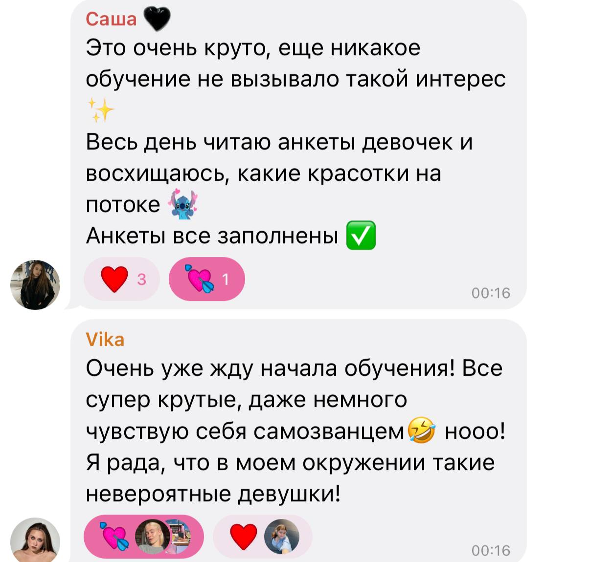
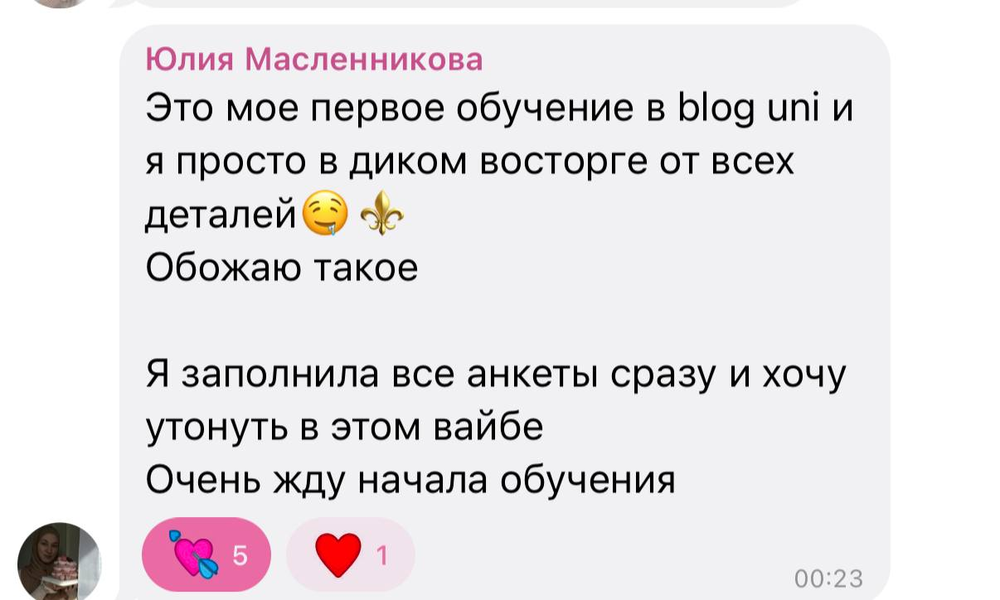
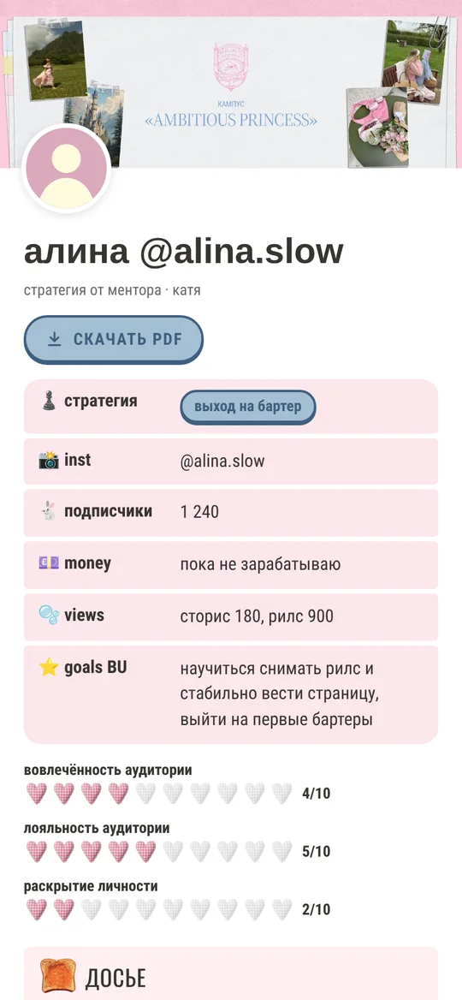

экскурсия по lazy campus
в каком образе пойдёшь гулять по кампусу?
выбери себе героиню: она пройдёт по карте и покажет, как устроена учёба
{{p.name}}
{{say}}
blog university · lazy campus
{{stepLabel}}
{{visitedCount}}/5
{{hintText}}
{{sheetKicker}}
доступ на лейзи-кампусе откроется сразу в начале обучения ко всей библиотеке уроков, а выбранный трек обучения поможет понять, в каком порядке их смотреть — смотреть уроки можно в своём cozy-темпе
всю программу сможешь посмотреть в конце экскурсии в библиотеке и даже посмотреть один из уроков (тссс это секрет🤫)
всю программу сможешь посмотреть в конце экскурсии в библиотеке и даже посмотреть один из уроков (тссс это секрет🤫)
115уроков в главном кампусе
9направлений плюс курсовые
а ещё на lazy campus будут открытые лекции от директора. загляни в большой зал.
открытые лекции
здесь директор проводит особые онлайн-лекции для всего потока. на этом лейзи-потоке таких лекций будет 5 — самая актуальная информация в живом формате.
в целом, говорят, если прийти только сюда и не посмотреть ни один урок, шансы вырастить блог всё ещё большие🤣🙏🏼 информэйшен будет просто в точку.
в целом, говорят, если прийти только сюда и не посмотреть ни один урок, шансы вырастить блог всё ещё большие🤣🙏🏼 информэйшен будет просто в точку.
только на lazy-потоке
пижамная вечеринка
3 раза на лейзи-потоке вместо посиделок у пруда откроется возможность попасть на пижамную вечеринку с директором — то есть возможность получить разбор от директора в чате…
самое уютное место, где собираются все студенты: болтают, поддерживают друг друга, делятся успехами, встречаются вживую в городах
скажу так: комьюнити BLOG UNI — это то, что не описать словами, надо хотя бы один раз попасть, чтобы понять🥹 это саааамое лучшее комьюнити эвер.
скажу так: комьюнити BLOG UNI — это то, что не описать словами, надо хотя бы один раз попасть, чтобы понять🥹 это саааамое лучшее комьюнити эвер.
можешь почитать примеры сообщений:


пикник с ментором
ох, здесь у нас каждый день работает дежурный ментор и не пропускает ни одного запроса!! с понедельника по пятницу ментор из основного состава (а они у нас самые крутые, реально…) отвечает на любой вопрос по блогу & делает разбор любого контента.
как итог: за всё обучение ты можешь забрать опыт не только директора, но и всех наших менторов-больших блогеров с их уникальными superpowers🦸🏼
как итог: за всё обучение ты можешь забрать опыт не только директора, но и всех наших менторов-больших блогеров с их уникальными superpowers🦸🏼
{{d.day}}{{d.note}}
новое
недели от ментора
что-то новенькое: теперь у нас будут ещё и недели от ментора, где ментор делится со всем потоком материалом от себя, отражающим его суперсилу!
все студенты живут в кампусах в комнатах с рум мейт, с которым можно вместе идти к целям в блоге. у каждого кампуса есть свой ментор. ментор составляет для тебя индивидуальную стратегию блога и ведёт тебя к целям весь поток💔
так выглядит стратегия

{{c.name}}{{c.mentor}}
с самой высокой точки кампуса видно наших звёзд: здесь собраны легендарные студенты BLOG UNI.🔭⭐️
да, тут целых 400 звёзд — это каждый шестой студент, оформленный здесь, а ведь мы успеваем выкладывать не всё и делимся только результатами за поток… так что это не случайность, а высокий результат методологии обучения.
посмотреть на 400 звёзд ⭐️
да, тут целых 400 звёзд — это каждый шестой студент, оформленный здесь, а ведь мы успеваем выкладывать не всё и делимся только результатами за поток… так что это не случайность, а высокий результат методологии обучения.
тут ты можешь посмотреть полноценную экскурсию словами самого директора — послушать всю программу уроков, конкурсов и всего, что я не успела теперь рассказать
ну и можешь забрать с собой домой один урок из библиотеки, просто очень хочу, чтобы ты увидела, насколько у нас здесь классно📚
ох, да, я же даже не показала тебе красавчика Джейкоба… ну пусть это будет сюрпризом, когда ты поступишь
xoxo, до встречи в кампусе!!
пробный урокурок из библиотеки blog university
экскурсия от директораполина показывает весь lazy campus
ну и можешь забрать с собой домой один урок из библиотеки, просто очень хочу, чтобы ты увидела, насколько у нас здесь классно📚
ох, да, я же даже не показала тебе красавчика Джейкоба… ну пусть это будет сюрпризом, когда ты поступишь
xoxo, до встречи в кампусе!!
хочешь заселиться?
напиши старшекурснику, он ещё держит для тебя местечко!
но поторопись, в лейзи-кампусе осталось меньше 30 незанятых кроватей!🛌💤 написать старшекурснику
но поторопись, в лейзи-кампусе осталось меньше 30 незанятых кроватей!🛌💤 написать старшекурснику
ты обошла весь кампус · новинка этого потока
а теперь главное: всё это живёт в мини-апке your mentor
анти-сдвг формат: буквально ВСЁ, чтобы у тебя не было возможности выпасть из блога и потерять фокус…
пока ты ленишься — мини-аппка собирает всё в одном месте и пушит по ключевым задачкам🤞🏼

пока ты ленишься — мини-аппка собирает всё в одном месте и пушит по ключевым задачкам🤞🏼